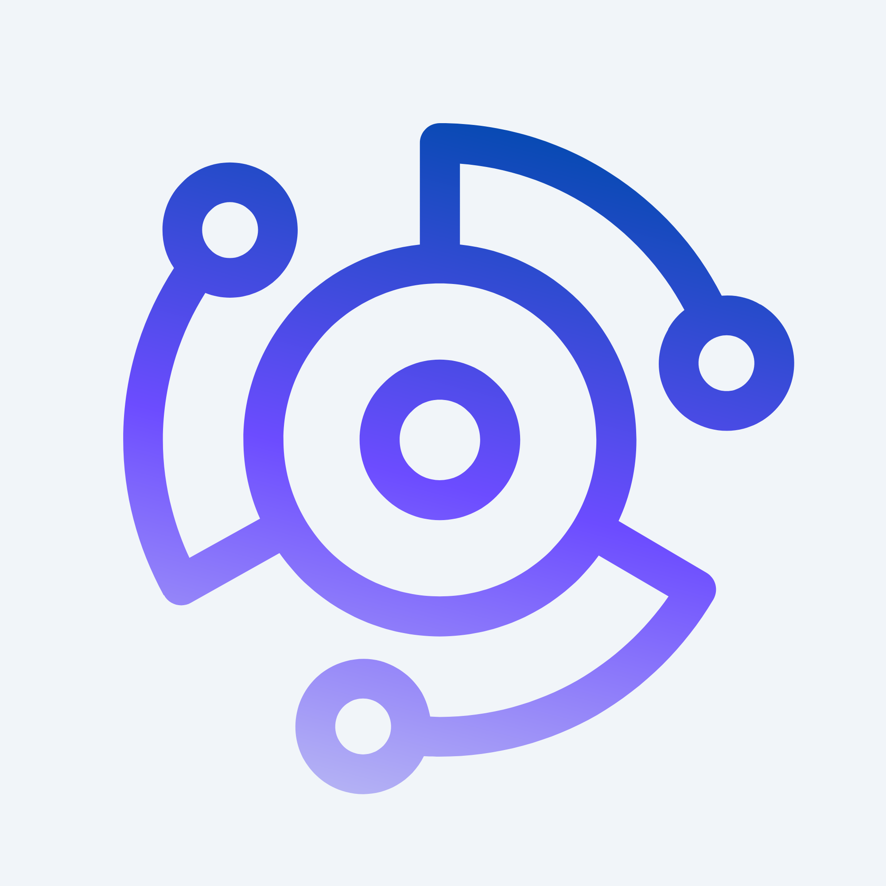

HTML, CSS, JavaScript, Git, Java, SQL, en su mayoria enfocadas al desarrollo web.
Estoy cursando el semestre 2026-2, y es mi sexto semestre de la carrera.
Disfruto mucho jugar videojuegos, escuchar musica y pasar tiempo con mis amigos.
En el area de la computacion me entretiene mantenerme al tanto de las novedades y probar herramientas nuevas en mi tiempo libre.